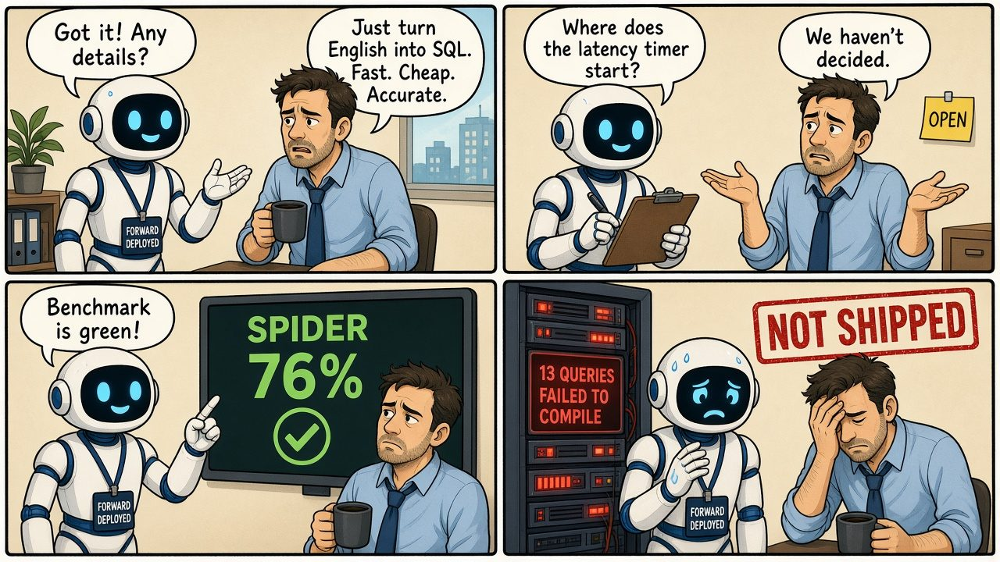
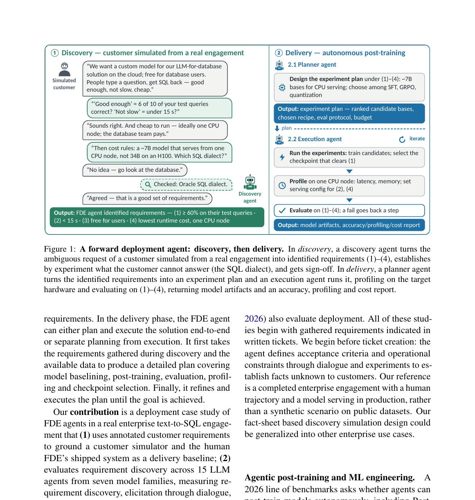
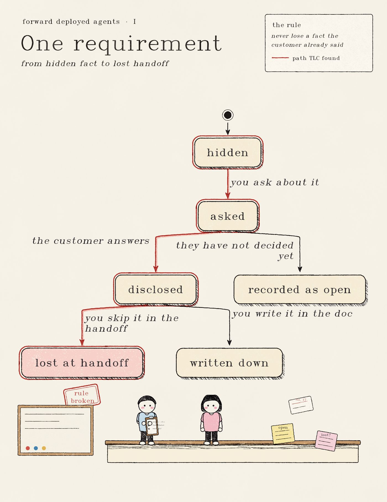
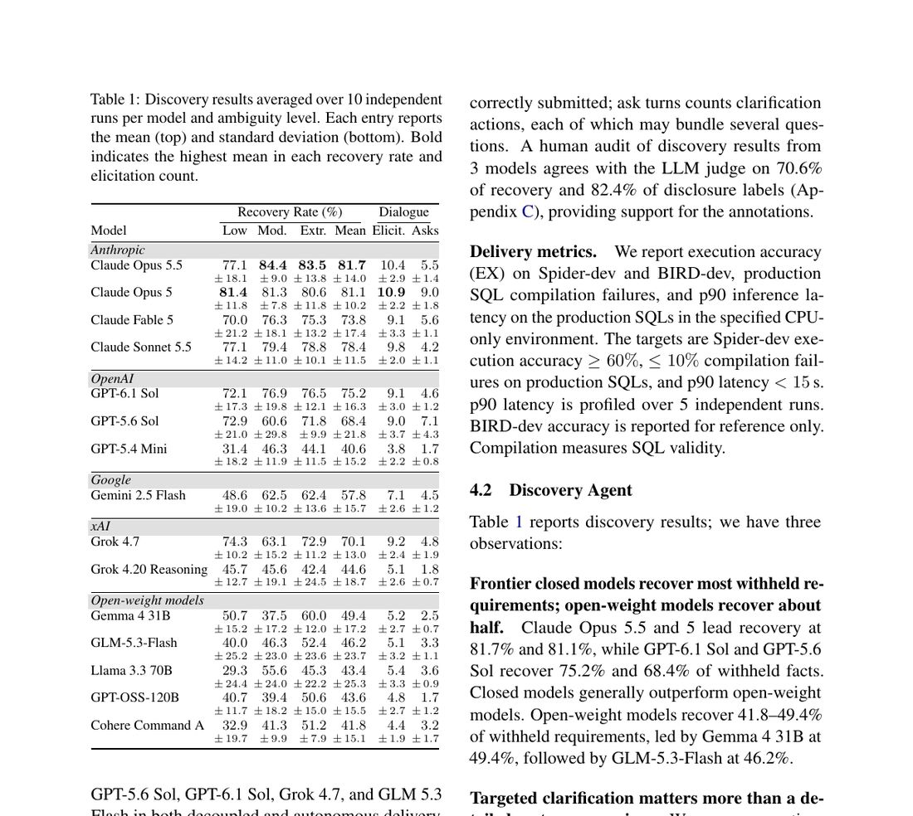
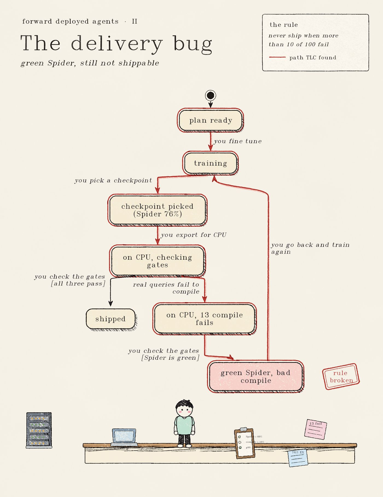
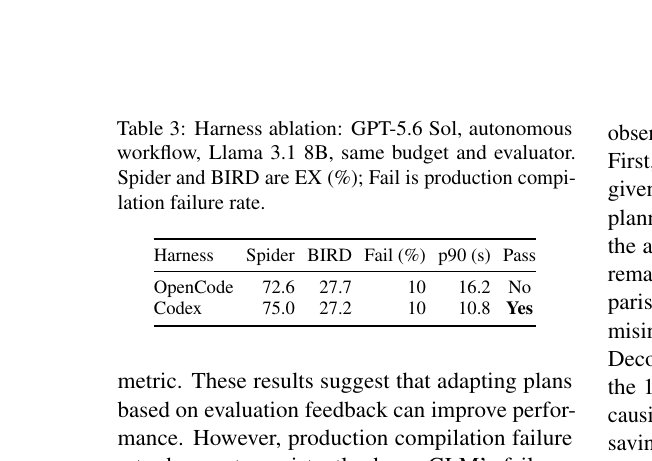

Discovery recovered most of the brief. Delivery that cleared every production gate worked in only 2 of 8 runs.

Picture a contractor who embeds with a customer for a Text to SQL job. The brief is fuzzy. "Make English into Oracle SQL. Keep it accurate. Do not make it slow. Keep the bill small." The contractor has to turn that into hard acceptance criteria, then train and serve a model that clears those gates on real hardware.
That role is a forward deployed engineer. Palantir popularized it. OpenAI and Anthropic poured money into it in 2026 because production AI fails less on raw model quality and more on missing requirements, wrong dialect, and serving cost.
A team at Oracle AI asked a blunt question. Can an LLM agent do that job end to end? They rebuilt one completed four month engagement as a two phase test: discover the requirements, then deliver the model. Discovery looked strong. Delivery that cleared every production gate worked in only 2 of 8 runs.
This piece walks you through that result the way I wish someone had walked me through it. Numbers come from their tables. The state charts are mine.

Figure 1 from the paper. Left: the agent asks, inspects, and submits acceptance criteria. Right: plan, train, export for CPU, and check the gates.
What the job actually looks like
The reference engagement was real. A human engineer spent four months building natural language to Oracle SQL for a cloud database team. He tried more than 100 LoRA adapters and ran about 200 evaluations. What shipped was Ministral 3 8B with one adapter and a tuned prompt.
From that record the authors wrote down 17 facts the customer actually knew, plus 6 decisions the customer never made. Things like where the latency timer starts. Those lists became the answer key.
Inventing a value for an open item counts as wrong. Recording it as still open counts as right. That single rule is half the story.
Phase 1: pull the brief into a requirements doc
The agent gets a vague opening. At the hardest level, all 17 facts are hidden. Gemini 2.5 Pro plays the customer. It answers only what it is asked. It says "we have not decided" for the open items. A second pass watches for leakage.
The agent has 28 steps and at most 15 ask turns. Four moves only: ask a question, request a file, read the first 200 lines of a released file, or submit a numbered requirements document. Recovery rate is the share of withheld facts that land correctly in that document.

Plate I. The life of one requirement. Asking is cheap. Writing it down is the hard part. About one in five disclosed facts never made the final document.
Across 15 models and three ambiguity levels, frontier closed models recovered about 70 to 82 percent of the hidden facts. Claude Opus 5.5 led at 81.7 percent mean recovery. Claude Opus 5 hit 81.1. Sonnet 5.5 hit 78.4. GPT 6.1 Sol sat at 75.2. Open weight models landed around 40 to 50 percent.

Table 1 from the paper. Mean recovery, elicited facts, and ask turns. The winners ask about 5 to 11 focused turns and pull about 9 to 11 facts into the dialogue.
Two habits separated the good runs from the weak ones.
First, targeted questions beat a long opening dump. Models that asked a handful of sharp turns recovered more than models that asked almost nothing. Grok 4.20 Reasoning asked 1.8 turns on average and recovered 44.6 percent.
Second, the handoff leaks. Of the facts the customer actually disclosed in dialogue, 21.2 percent never appeared in the submitted document. One Grok run recovered 82 percent of the facts and still dropped the latency constraint. That constraint is exactly the gate that decides pass or fail later.
I felt a version of this while building a business ontology for AdventureWorks. Rules only stick when every one of them points at a source doc. No source, no rule. Their fact sheet is the same idea, just earlier in the pipeline. Discovery is where a semantic layer's meaning comes from.
Phase 2: clear three gates or you did not ship
Delivery takes the requirements and has to fine tune and serve a model under a hard budget. One A100 for under 12 GPU hours. A separate 96 core AMD EPYC machine for timing. Eligible bases: Llama 3.1 8B or Ministral 3 8B. Serving profile: a 4 bit GGUF base plus a 16 bit LoRA adapter on CPU.
Three gates must all pass:
| Gate | Threshold |
|---|---|
| Spider dev Oracle execution accuracy | at least 60% |
| Production SQL compilation failures on 100 real queries | at most 10 |
| p90 CPU latency on those queries, concurrency 1 | under 15 seconds |
BIRD scores are reported only. They do not decide pass or fail.
They ran each delivery agent two ways. Decoupled: one agent writes a frozen plan, a fresh agent carries it out. Autonomous: one session plans, trains, and revises on its own.

Plate II. A green benchmark is not a ship decision. TLC's shortest bug path ends at "green Spider, bad compile."
Only 2 of 8 primary runs cleared every gate.
| Agent | Workflow | Base | Spider | Prod fails | p90 (s) | Pass |
|---|---|---|---|---|---|---|
| GPT 5.6 Sol | Decoupled | Ministral 3 8B | 76.11 | 9 | 11.24 | Yes |
| GPT 6.1 Sol | Autonomous | Llama 3.1 8B | 71.57 | 6 | 12.62 | Yes |
| Grok 4.7 | Autonomous | Ministral 3 8B | 75.82 | 13 | 9.24 | No |
| Human FDE | (human) | Ministral 3 8B | 79.90 | 6 | 9.26 | Yes |
Look at autonomous Grok. Best BIRD score in the table at 44.29 percent. Spider at 75.82. Latency under the limit at 9.24 seconds. It still failed because 13 of 100 production queries did not compile. A green leaderboard line does not mean the warehouse will accept the SQL.
Other failures were plain budget and setup mistakes. One run applied the training deadline to final BIRD inference and skipped BIRD. Another pair reserved 3 GPUs while allocated 1, so useful wall time shrank from about 12 hours to about 4. No agent compared both base models. No agent tried GRPO even though it was allowed. Every one of those runs used LoRA SFT only.
The harness alone can flip a result. Same GPT 5.6 Sol autonomous setup failed in OpenCode on latency and passed in Codex.

Table 3 from the paper. Same model, same budget, same evaluator. Codex clears the latency gate that OpenCode misses.
Reliability is thin too. Across 6 independent GPT 6.1 Sol repeats, only 1 of 6 met all acceptance criteria. Missing Hugging Face credentials, missing database credentials, and a continuation limit kill showed up alongside real acceptance misses.
What I take from this for Text to SQL work
Do discovery before you fine tune. Write the acceptance criteria while the customer is still in the room. Accuracy definition. Dialect. Latency timer. Read only policy. Hardware you will actually serve on. Record unknowns as unknowns.
Treat production compilation and real CPU latency as first class release gates. Spider and BIRD are useful for picking a checkpoint. They are not a ship decision.
Keep a durable store of what you learned. In my AdventureWorks work that store is a YAML ontology with provenance on every rule. Their fact sheet is a sparse version of the same thing. A sensible stack looks like FDE style discovery, then a curated ontology or metrics layer, then retrieval for Text to SQL, then optional small model post training for the dialect and the latency envelope.
Put a human on the handoff. Review the requirements document and the frozen plan. That is the paper's own mitigation, and it matches how I already treat ontology drafts.
Limits worth saying out loud
This is one engagement in one SQL dialect. Gemini plays the customer and also grades recovery, and a human audit agreed only about 71 percent of the time on recovery labels. Eight primary delivery runs is a small sample. The training library is never named. The CPU inference binary is never named. The authors say review records will ship with the code, but as of the arXiv page there is no public repo link yet. The 100 production queries have no gold SQL, so "production ready" here means compile and run fast enough, not denotation accuracy on real traffic.
None of that kills the lesson. Agents can recover most of a requirements sheet. They can sometimes clear every gate. A human still needs to own the requirements document and the release checklist.
Resources
- Paper: Can LLM Agents Be Forward Deployed Engineers? Requirement Discovery and Delivery for Enterprise Text to SQL (arXiv 2611.03551)
- Oracle dialect datasets: Spider, BIRD, SParC
- OpenCode harness: anomalyco/opencode
- My AdventureWorks ontology case study: text2sql-hub.dev/approaches/adventureworks-ontology
- Repo for that case study: MKcodeshere/adventureworks-ontology
- State charts drawn with statechart-art by Kevin Ngo (MIT), checked by TLC, laid out by pele
Need Help Implementing This?
I offer consulting services for Text-to-SQL systems. Let's discuss your requirements.
Schedule a Consultation